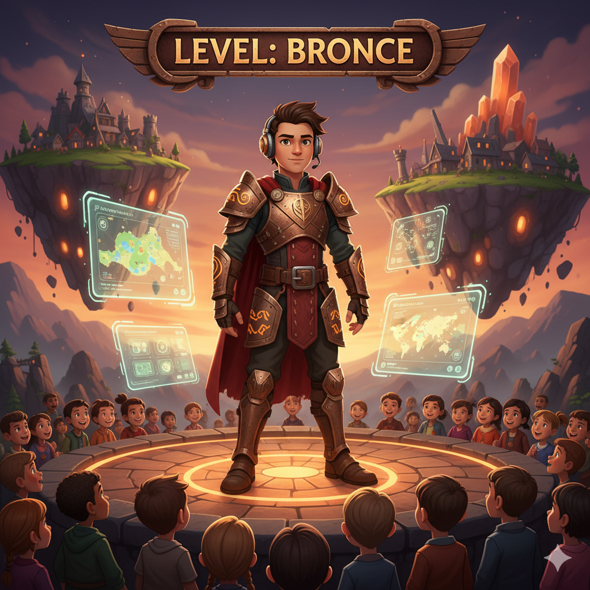

Descripción ABP + Polya
El Dúo Invencible: ABP + Polya

Es simple:
El ABP te entrega el emocionante misterio por resolver.
El Método de Polya te da los superpoderes para enfrentarlo.
No estás aquí para ser un robot que repite cálculos. Estás aquí para pensar, para crear, para equivocarte y, sobre todo, para aprender a superar cualquier reto que se te ponga por delante.
¿Alguna vez has sentido que en clase solo te dan respuestas para que las memorices? ¡Pues eso se acabó! A partir de ahora, vamos a cambiar las reglas del juego. No serás un espectador, serás el protagonista de una aventura intelectual.
Imagina que, en lugar de darte un manual con instrucciones, te damos un mapa del tesoro con solo una "X" marcada. Tu misión es llegar a ese tesoro. ¿Cómo? ¡Ese es el desafío!